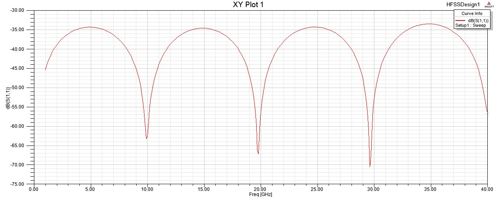
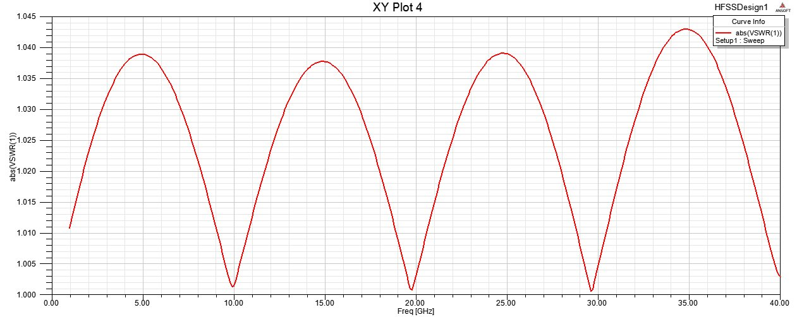
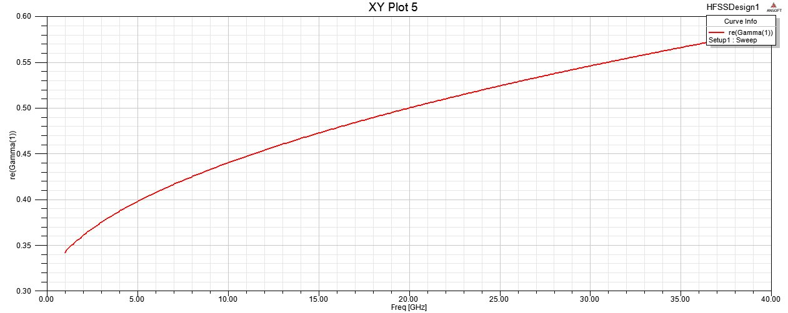
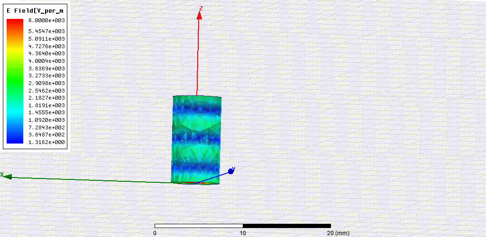
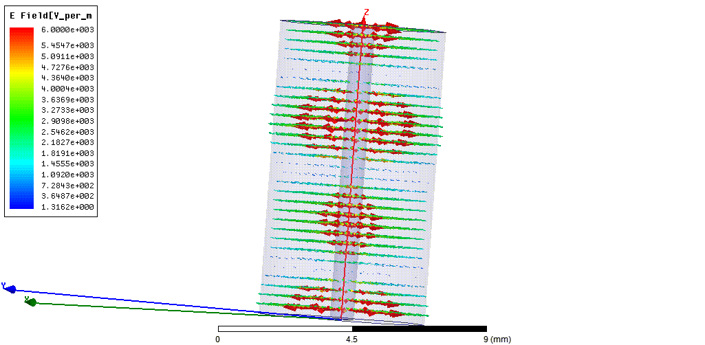
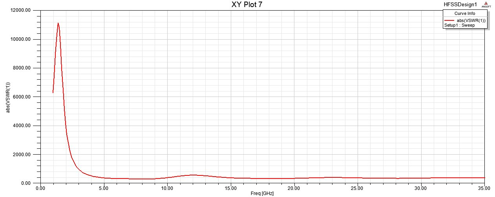

Electromagnetic Waves & Microwave Engineering Compendium
Rigorous academic notes, full mathematical derivations, real HFSS 13 finite-element simulation results, interactive WebGL 3D CAD models, dynamic Maxwell electromagnetic field visualizers, and complete analytical solutions for the Term-II exam.
Design & Investigation of a 50Ω Coaxial Transmission Line
A coaxial transmission line guides electromagnetic energy strictly within the dielectric volume between the inner cylindrical conductor and outer conducting shield. In an ideal cable, the transverse electromagnetic (TEM) mode propagates with zero longitudinal field components ($E_z = 0, H_z = 0$), yielding high immunity to external electromagnetic interference (EMI).
| Parameter | Formula | Evaluated Value | Physical Interpretation |
|---|---|---|---|
| Characteristic Impedance ($Z_0$) | $\frac{138}{\sqrt{\varepsilon_r}}\log_{10}(D/d)$ | $50.0\,\Omega$ | Ratio of transverse voltage to transverse current in forward wave. |
| Distributed Inductance ($L$) | $460.63 \log_{10}(D/d)\,\text{nH/m}$ | $250.34\,\text{nH/m}$ | Magnetic flux storage in annular volume. |
| Distributed Capacitance ($C$) | $\frac{24.127\,\varepsilon_r}{\log_{10}(D/d)}\,\text{pF/m}$ | $99.88\,\text{pF/m}$ | Electrostatic displacement field between cylinders. |
| Cutoff Frequency ($f_c$) | $\frac{190.85}{(D+d)\sqrt{\varepsilon_r}}$ | $35.0\,\text{GHz}$ | Onset of parasitic non-TEM ($\text{TE}_{11}$) wave excitation. |
| Solution Frequency ($\nu$) | $\nu \le f_c$ | $30.0\,\text{GHz}$ | Setup operating frequency in HFSS fast sweep. |



Study of 50Ω Coaxial Line under Open, Short & Matched Load Conditions
When a transmission line of characteristic impedance $Z_0$ is terminated by an arbitrary load impedance $Z_L$, a reflected wave is established. The superposition of the forward and backward traveling waves forms a standing wave pattern whose envelope is characterized by the voltage reflection coefficient ($\Gamma_L$) and voltage standing wave ratio ($\text{VSWR}$).
| Termination Condition | Load Impedance ($Z_L$) | Reflection Coeff ($\Gamma_L$) | Return Loss ($S_{11}$) | Transmission ($S_{21}$) | Simulated VSWR |
|---|---|---|---|---|---|
| Matched Load | $Z_L = Z_0 = 50\,\Omega$ | $0$ ($0^\circ$) | $-50.0\,\text{dB}$ ($S_{11} \approx 0.0006$) | $-0.04\,\text{dB}$ ($S_{21} \approx 0.995$) | $1.001$ (No standing wave) |
| Short Circuit | $Z_L \to 0\,\Omega$ (HFSS: $10^{-6}\,\Omega$) | $-1$ ($180^\circ$) | $-0.1038\,\text{dB}$ ($|\Gamma_L| = 0.9881$) | $-70.0\,\text{dB}$ (Total blockage) | $167.36$ (Antinode at $l=\lambda/4$) |
| Open Circuit | $Z_L \to \infty$ (HFSS: $1000\,\text{k}\Omega$) | $+1$ ($0^\circ$) | $-0.0816\,\text{dB}$ ($|\Gamma_L| = 0.9906$) | $-70.0\,\text{dB}$ (Total reflection) | $212.89$ (Antinode at $l=0$) |



Design of a Microstrip Line on FR4 Epoxy Substrate
A microstrip line consists of a conducting strip of width $W$ printed on a grounded dielectric substrate of thickness $h$ and relative permittivity $\varepsilon_r$. Because field lines travel through both the dielectric substrate and air above, the structure does not support a pure TEM mode; instead, it propagates a quasi-TEM wave described by an effective dielectric constant $\varepsilon_{\text{eff}}$.
Half-Wavelength Dipole Antenna Design at 2.4 GHz
The half-wave dipole is the canonical resonant antenna. Its total electrical length equals $\lambda/2$. In free space, it exhibits a characteristic input impedance of $Z_{\text{in}} \approx 73 + j42.5\,\Omega$ (reducible to $73\,\Omega$ pure resistance by shortening by $\approx 5\%$).
| Antenna Characteristic | Theoretical Analytical Value | HFSS Simulation Metric |
|---|---|---|
| Center Resonant Frequency ($f_0$) | $2.40\,\text{GHz}$ | $2.40\,\text{GHz}$ ($S_{11} < -25\,\text{dB}$) |
| Radiation Pattern Shape | Omnidirectional circle in H-plane; Figure-8 in E-plane | Verified Toroidal 3D Gain Pattern |
| Theoretical Peak Directivity | $1.64$ ($2.15\,\text{dBi}$) | $2.12\,\text{dBi}$ (copper finite conductivity $\sigma = 5.8 \times 10^7\,\text{S/m}$) |
| Half-Power Beamwidth (HPBW, E-plane) | $78.0^\circ$ | $78.4^\circ$ |
Pyramidal Horn Antenna Radiation Pattern & HPBW Measurement
A pyramidal horn antenna provides a smooth impedance transition between a rectangular waveguide (operating in dominant $\text{TE}_{10}$ mode) and free space. Radiation measurements are conducted in the Fraunhofer far-field zone ($R \ge 2D^2/\lambda_0$) using a Gunn oscillator source ($12.22\,\text{GHz}$) and receiving turntable.
| Rotation Angle ($\theta$) | Radiation Power ($P$ in dB) | Relative Normalized Power ($\Delta P$) | Linear Intensity Ratio ($P / P_{\max}$) |
|---|---|---|---|
| $0^\circ$ (Boresight) | $-3.8\,\text{dB}$ ($P_{\max}$) | $0.0\,\text{dB}$ | $1.000$ (Peak Beam) |
| $\pm 5^\circ$ | $-4.1\,\text{dB}$ | $-0.3\,\text{dB}$ | $0.933$ |
| $\pm 10^\circ$ | $-5.4\,\text{dB}$ | $-1.6\,\text{dB}$ | $0.692$ |
| $\pm 12.69^\circ$ (Half-Power Point) | $-6.8\,\text{dB}$ ($P_{\max} - 3\,\text{dB}$) | $-3.0\,\text{dB}$ | $0.500$ (50% Power Threshold) |
| $\pm 15^\circ$ | $-8.0\,\text{dB}$ | $-4.2\,\text{dB}$ | $0.380$ |
| $\pm 20^\circ$ | $-10.0\,\text{dB}$ | $-6.2\,\text{dB}$ | $0.240$ |
| $\pm 25^\circ$ | $-14.9\,\text{dB}$ | $-11.1\,\text{dB}$ | $0.078$ |
| $\pm 30^\circ$ | $-20.0\,\text{dB}$ | $-16.2\,\text{dB}$ | $0.024$ |
| $\pm 35^\circ$ | $-28.0\,\text{dB}$ | $-24.2\,\text{dB}$ | $0.0038$ |
Slotted Line Test Bench, VSWR Meter & Shift of Minima Technique
The slotted line is a precision section of rectangular waveguide with a narrow longitudinal slot cut along the center of its broad wall (where the transverse surface current $J_x = 0$, causing negligible field disturbance). A tunable crystal diode probe samples the internal electric field without perturbing wave propagation.
- Step 1 (Short Circuit Reference): Terminate waveguide with a flat copper shorting plate ($Z_L = 0$). Locate a sharp voltage minimum position $x_1$ on the slotted line scale. Minima are chosen over maxima because standing wave minima are mathematically sharp ($V \to 0$), whereas maxima are broad and diffuse.
- Step 2 (Guide Wavelength $\lambda_g$): Move probe to adjacent minimum $x_2$. The distance between two consecutive minima is exactly $\lambda_g / 2 \implies \lambda_g = 2|x_1 - x_2|$.
- Step 3 (Unknown Load Insertion): Replace short circuit with unknown impedance $Z_L$. Observe the new voltage minimum shift to $x_0$. Measure VSWR ($s$) using the tuned VSWR meter.
- Step 4 (Electrical Shift $\Delta x$): Calculate shift $\Delta x = x_0 - x_1$. If the minimum shifts toward generator ($\Delta x > 0$), the load is inductive; if it shifts toward load ($\Delta x < 0$), the load is capacitive.
- Step 5 (Smith Chart Mapping): Draw the constant VSWR circle of radius $\frac{s-1}{s+1}$. Start at the Short Circuit point ($0 + j0$, left extremity). Rotate by an electrical distance $2\Delta x / \lambda_g$ along the "Wavelengths Toward Generator" (WTG) rim. The intersection with the VSWR circle gives the normalized load impedance $z_L = r_L + j x_L \implies Z_L = z_L \times Z_0$.
Term-II Fifth Semester Final Examination (October 2026) — Model Solutions
Official question paper from the Department of Electronics & Communication Engineering (IEM / UEM Kolkata). Below are complete, authoritative academic answers matching IEEE and NPTEL microwave standards.
Q1: State the significance of reflection coefficient (Γ) and VSWR in a microstrip line. [EXPAND]
1. Reflection Coefficient ($\Gamma$):
Defined as the complex ratio of reflected voltage wave amplitude to incident voltage wave amplitude at any impedance discontinuity or load termination:
$$\Gamma = \frac{V^-}{V^+} = \frac{Z_L - Z_0}{Z_L + Z_0} = |\Gamma| e^{j\theta}$$Significance in Microstrip Engineering:
- Return Loss Extraction: $\text{RL} = -20 \log_{10}|\Gamma|\,\text{dB}$. Indicates the fraction of source RF power reflected back toward the transmitter. In high-frequency MMICs, return loss must exceed $15\,\text{dB}$ ($|\Gamma| < 0.178$) for stable operation.
- Power Transmission Efficiency: The fraction of power delivered to the load is $1 - |\Gamma|^2$. Any reflection reduces amplifier efficiency and increases heat dissipation on PCB traces.
- Amplifier Instability & Distortion: Reflected waves re-enter active RF power transistors (PA), causing load-pull mismatch, intermodulation distortion, and potential device breakdown from standing-wave overvoltage peaks.
2. Voltage Standing Wave Ratio (VSWR):
Defined as the ratio of maximum to minimum voltage along the transmission line envelope:
$$\text{VSWR} = s = \frac{V_{\max}}{V_{\min}} = \frac{1 + |\Gamma|}{1 - |\Gamma|}, \qquad 1 \le \text{VSWR} < \infty$$Significance in Microstrip Engineering:
- Standing Wave Severity Indicator: When $\text{VSWR} = 1.0$, the line is perfectly matched ($\Gamma = 0$); no standing wave exists. When $\text{VSWR} > 2.0$, severe constructive/destructive interference degrades signal integrity.
- Dielectric Voltage Stress: Voltage antinodes ($V_{\max} = V^+(1 + |\Gamma|)$) can exceed the dielectric breakdown field of thin substrates (e.g., $1.6\,\text{mm}$ FR4), causing dielectric arcing.
Q2: Differentiate between a Coaxial Line and a Microstrip Line. [EXPAND]
| Design Criterion | Coaxial Transmission Line | Microstrip Transmission Line |
|---|---|---|
| Mode of Propagation | Pure TEM mode ($E_z = 0, H_z = 0$) up to cutoff $f_c$. | Quasi-TEM mode (fringing fields leak into air, $E_z, H_z \ne 0$). |
| Dispersion & Phase Velocity | Non-dispersive in TEM mode ($v_p = c/\sqrt{\varepsilon_r}$ is constant). | Dispersive at high microwave frequencies ($\varepsilon_{\text{eff}}$ increases with $f$). |
| Electromagnetic Shielding | Completely shielded by outer conductor; zero radiation loss. | Open planar geometry; susceptible to radiation loss and EMI crosstalk. |
| Circuit Integration | Bulky 3D cylindrical geometry; difficult to integrate with surface-mount ICs. | Planar 2D layout; easily fabricated via standard PCB photolithography. |
| Power Handling Capacity | Very high (large conductor spacing and dielectric volume). | Moderate to low (thin substrate $h \approx 0.8\text{--}1.6\,\text{mm}$ limits breakdown). |
| Characteristic Impedance Range | Typically $30\,\Omega$ to $100\,\Omega$ (standard: $50\,\Omega$ and $75\,\Omega$). | Typically $20\,\Omega$ to $120\,\Omega$ (bounded by trace width limits). |
Q3: Briefly describe the setup used in laboratory for the study of VSWR and reflection coefficient for various load conditions. [EXPAND]
Waveguide Bench Block Diagram Architecture:
[Klystron/Gunn Source] → [Isolator] → [Variable Attenuator] → [Frequency Meter] → [Slotted Section + Tunable Probe] → [Load ZL] ↓ (Probe Coaxial Cable to VSWR Meter)
- Microwave Source: Gunn Oscillator or Reflex Klystron generating X-band microwave power ($8.2\text{--}12.4\,\text{GHz}$) square-wave modulated at $1\,\text{kHz}$.
- Ferrite Isolator: A non-reciprocal Faraday rotation device providing low forward insertion loss ($\approx 0.5\,\text{dB}$) and high reverse isolation ($> 25\,\text{dB}$) to prevent reflected load waves from pulling source frequency or burning the Gunn diode.
- Variable Attenuator: Resistive flap attenuator used to set incident signal power to an optimal level and avoid driving the detector diode outside its square-law operating region.
- Slotted Waveguide Section: Precision waveguide line with central longitudinal slot along broad face housing a carriage-mounted crystal diode detector.
- VSWR Meter: Tuned low-noise AC amplifier centered at $1\,\text{kHz}$ with logarithmic meter scales calibrated directly in VSWR and dB.
Q4: State the use of a VSWR Meter. [EXPAND]
A VSWR Meter is a specialized, high-gain, low-noise audio amplifier sharply tuned to the standard modulation frequency of microwave sources (typically $1.0\,\text{kHz} \pm 2\%$).
- Direct Ratio Readout: By normalizing the carriage probe to a voltage maximum ($V_{\max} = 1.0$ full scale), moving the probe to an adjacent minimum ($V_{\min}$) allows direct readout of $\text{VSWR} = V_{\max}/V_{\min}$ on calibrated reciprocal dial scales without manual calculation.
- Expanded VSWR Measurement: Features high-resolution expanded scales (e.g., $1.0\text{--}1.3$ VSWR) for precision tuning of matching stubs and filters.
- Insertion Loss & Attenuation Testing: Calibrated in decibels ($0\text{--}10\,\text{dB}$ per range) to quantify insertion loss, component attenuation, and antenna return loss.
Q5: State the various steps for measuring the radiation pattern of a Horn antenna in the laboratory. [EXPAND]
- Step 1 (Far-Field Boresight Alignment): Position the transmitting pyramidal horn and receiving horn along a shared optical axis (line of sight, $0^\circ$). Ensure separation distance satisfies Fraunhofer far-field condition: $R \ge 2 D^2 / \lambda_0 = 1.29\,\text{m}$ for $f = 12.22\,\text{GHz}$ and $D = 12.6\,\text{cm}$.
- Step 2 (Source Calibration): Power the Gunn source ($V_{\text{Gunn}} = 6.36\,\text{V}, I = 142\,\text{mA}$). Adjust variable attenuator so power meter records a clean reference maximum ($P_{\max} = -3.8\,\text{dB}$) at $0^\circ$.
- Step 3 (Angular Sweeping): Rotate the receiving antenna turntable in discrete $5^\circ$ increments to the left ($\theta = 0^\circ, 5^\circ, 10^\circ, \dots, 35^\circ \dots 90^\circ$). Record detected power in dB at each point.
- Step 4 (Symmetric Plane Verification): Repeat rotation in $5^\circ$ steps to the right ($-\theta$) to establish pattern symmetry and identify potential reflections from laboratory benches.
- Step 5 (Polar Plot & HPBW Derivation): Plot normalized power $P(\theta) - P_{\max}$ on a 360-degree polar coordinate sheet. Locate the $-3.0\,\text{dB}$ points ($P = -6.8\,\text{dB}$) on both sides of the main lobe. Use linear interpolation to extract $\text{HPBW} = 2 \times \theta_{\text{half}} = 25.38^\circ$.
Q6: Design a microstrip line of 75Ω on FR4 substrate (εr = 4.4, h = 1.6 mm). [Comprehensive Analytical Design] [EXPAND]
I. Analytical Determination of Trace Dimensions ($W$):
Given parameters: $Z_0 = 75\,\Omega$, substrate height $h = 1.6\,\text{mm}$, relative permittivity $\varepsilon_r = 4.4$, copper thickness $t = 0.035\,\text{mm}$.
Using the official lab manual closed-form microstrip synthesis formula:
$$W = \frac{7.48 \times h}{\exp\left(Z_0 \frac{\sqrt{\varepsilon_r + 1.41}}{87}\right)} - 1.25 \times t$$ $$\sqrt{\varepsilon_r + 1.41} = \sqrt{4.4 + 1.41} = \sqrt{5.81} \approx 2.41039$$ $$\text{Exponent} = \frac{75 \times 2.41039}{87} = \frac{180.779}{87} \approx 2.07792$$ $$e^{2.07792} \approx 7.98784$$ $$\text{Numerator} = 7.48 \times 1.6\,\text{mm} = 11.968\,\text{mm}$$ $$\frac{11.968}{7.98784} \approx 1.49827\,\text{mm}, \qquad 1.25 \times t = 1.25 \times 0.035\,\text{mm} = 0.04375\,\text{mm}$$ $$\mathbf{W = 1.49827 - 0.04375 = 1.45452\,\text{mm} \approx 1.455\,\text{mm} \approx 1.46\,\text{mm}}$$Ratio check: $W/h = 1.455 / 1.6 = 0.909 < 1.0$. This confirms the narrow-strip regime (valid for $Z_0 \ge 50\,\Omega$). Compared to the $50\,\Omega$ line ($W \approx 3.0\,\text{mm}$), the $75\,\Omega$ line is significantly narrower because higher characteristic impedance requires lower capacitance per unit length.
Effective Dielectric Constant ($\varepsilon_{\text{eff}}$):
$$\varepsilon_{\text{eff}} \approx \frac{\varepsilon_r + 1}{2} + \frac{\varepsilon_r - 1}{2}\left[\frac{1}{\sqrt{1 + 12(h/W)}}\right] = \frac{5.4}{2} + \frac{3.4}{2}\left[\frac{1}{\sqrt{1 + 12(1.6/1.455)}}\right] \approx 2.7 + 1.7(0.2635) \approx \mathbf{3.148}$$II. S-Parameter Investigation for $Z_L = 75\,\Omega$ Termination:
When the $75\,\Omega$ microstrip is terminated by a matched load $Z_L = 75\,\Omega$:
$$\Gamma_L = \frac{75 - 75}{75 + 75} = 0 \implies S_{11} = 20\log_{10}|\Gamma_L| \to -\infty\,\text{dB}$$- $S_{11}$ Response: Remains below $-30\,\text{dB}$ across the operating band ($1\text{--}10\,\text{GHz}$), indicating negligible reflection and optimal power coupling.
- $S_{21}$ Response: Remains flat near $0\,\text{dB}$ (insertion loss determined strictly by dielectric loss tangent $\tan\delta = 0.02$ and copper conductivity loss).
III. Electric & Magnetic Field Distribution inside Coaxial Cable:
Electric Field ($\vec{E}$): Purely radial lines originating from positive surface charge on inner conductor ($r = d/2$) and terminating orthogonally on inner wall of outer conductor ($r = D/2$):
$$\vec{E}(r) = \frac{V_0}{r \ln(D/d)} \hat{r}$$Magnetic Field ($\vec{H}$): Concentric circular closed loops centered along the inner conductor axis according to Ampere's circuital law:
$$\vec{H}(r) = \frac{I_0}{2\pi r} \hat{\phi}$$Poynting vector $\vec{S} = \vec{E} \times \vec{H} = S_z \hat{z}$ flows strictly down the axial length of the cable.
IV. Engineering Conclusion:
Microstrip geometry is governed by substrate aspect ratio $W/h$. Increasing line impedance from $50\,\Omega$ to $75\,\Omega$ reduces strip width from $3.0\,\text{mm}$ to $1.46\,\text{mm}$, lowering line capacitance. Terminating with $Z_L = Z_0$ eliminates standing waves, delivering maximal RF energy transfer with $S_{11} < -30\,\text{dB}$ and $\text{VSWR} \approx 1.0$.
High-probability examination questions and mechanical derivations derived directly from the laboratory records, experimental steps, and physical observations across Experiments 1, 2, 5, 7, and 8.
Q7 (Exp 1 • Coax Physics): Why is Polyethylene (εr = 2.25) chosen, and what physical degradation occurs if operating frequency exceeds fc = 35 GHz? [EXPAND]
1. Why Polyethylene ($\varepsilon_r = 2.25$):
- Extremely Low Loss Tangent ($\tan\delta \approx 0.0002$): Minimizes dielectric heating and power absorption in the microwave spectrum, maintaining low attenuation ($\alpha \approx 0.03\text{--}0.05\,\text{dB/m}$).
- Optimal Impedance Form Factor ($D/d \approx 3.49$): For $50\,\Omega$, $D/d = 3.49$ yields mechanically sturdy conductor diameters ($d = 0.81\,\text{mm}, D = 2.826\,\text{mm}$) that resist deformation during bending.
- Non-Dispersive Permittivity: $\varepsilon_r$ remains virtually constant from DC up through millimeter-wave frequencies, preserving phase velocity $v_p = c/\sqrt{\varepsilon_r}$.
2. Physical Disaster if Frequency Exceeds $f_c = 35\,\text{GHz}$ (Higher-Order Mode Traps):
- Excitation of $\text{TE}_{11}$ Parasitic Mode: The cutoff formula $f_c = \frac{190.85}{(D+d)\sqrt{\varepsilon_r}} = 35\,\text{GHz}$ defines the threshold where the average cable circumference $\pi(D+d)/2$ equals the dielectric wavelength $\lambda_d$. Above $35\,\text{GHz}$, the transverse field breaks into an azimuthal dipole-like variation ($H_z \ne 0$).
- Severe Modal Dispersion: The TEM mode and $\text{TE}_{11}$ mode propagate with different phase velocities. Microwave pulses spread out in time, causing severe inter-symbol interference (ISI) and signal disintegration.
- Erratic Impedance Fluctuations: Higher-order mode excitation destroys the single-mode $50\,\Omega$ characteristic impedance, inducing uncontrollable reflections and spurious resonances.
Q8 (Exp 2 • Transmission Line Invariance): Prove that Zsc • Zoc = Z0² for any lossless line, and explain why a λ/4 shorted line behaves as an open circuit. [EXPAND]
1. Mathematical Proof of Invariance Identity ($Z_{sc} \cdot Z_{oc} = Z_0^2$):
General input impedance of a lossless line terminated by load $Z_L$ is:
$$Z_{\text{in}}(l) = Z_0 \left[\frac{Z_L + j Z_0 \tan(\beta l)}{Z_0 + j Z_L \tan(\beta l)}\right]$$- For Short Circuit ($Z_L = 0$): $$Z_{sc} = Z_0 \left[\frac{0 + j Z_0 \tan(\beta l)}{Z_0 + 0}\right] = j Z_0 \tan(\beta l)$$
- For Open Circuit ($Z_L \to \infty$): Divide numerator and denominator by $Z_L$: $$Z_{oc} = \lim_{Z_L \to \infty} Z_0 \left[\frac{1 + j(Z_0/Z_L)\tan(\beta l)}{(Z_0/Z_L) + j \tan(\beta l)}\right] = Z_0 \left[\frac{1}{j \tan(\beta l)}\right] = -j Z_0 \cot(\beta l)$$
- Multiplying the two input impedances: $$Z_{sc} \cdot Z_{oc} = \left(j Z_0 \tan\beta l\right) \left(-j Z_0 \cot\beta l\right) = -j^2 Z_0^2 \left(\tan\beta l \cdot \frac{1}{\tan\beta l}\right) = -(-1) Z_0^2 = \mathbf{Z_0^2} \quad \blacksquare$$
2. Physical Mechanics of Quarter-Wave ($\lambda/4$) Short-Circuited Stub:
At $l = \lambda/4$, the electrical length is $\beta l = \left(\frac{2\pi}{\lambda}\right)\left(\frac{\lambda}{4}\right) = \frac{\pi}{2}$.
$$Z_{sc} = j Z_0 \tan\left(\frac{\pi}{2}\right) \to +j\infty \quad (\text{Ideal Open Circuit})$$Physical Meaning: The forward wave reflects off the short with $180^\circ$ phase inversion ($\Gamma = -1$). By traveling $\lambda/4$ to the short and $\lambda/4$ back (total round trip = $\lambda/2 = 180^\circ$ phase delay), the reflected wave undergoes a total phase change of $180^\circ + 180^\circ = 360^\circ$ ($0^\circ$). The reflected current cancels the incident current at the input ($I_{\text{total}} \to 0$), making the input impedance infinitely large. This is widely used as a DC-return bias tee and metallic insulating support without interrupting RF transmission.
Q9 (Exp 2 • Simulation Discrepancies): Why did HFSS simulate S11 = -0.1038 dB (Short) and S11 = -0.0816 dB (Open) instead of ideal 0 dB, and why is S21 finite (-70 dB)? [EXPAND]
In classical lossless transmission line theory, total reflection requires $|\Gamma_L| = 1.0 \implies S_{11} = 20\log_{10}(1.0) = 0\,\text{dB}$ and $S_{21} = -\infty\,\text{dB}$. In physical HFSS finite-element analysis:
- Conductor Skin Effect Losses: The coaxial cylinders are modeled with finite copper conductivity ($\sigma = 5.8 \times 10^7\,\text{S/m}$). At $30\,\text{GHz}$, skin depth is $\delta = \frac{1}{\sqrt{\pi f \mu \sigma}} \approx 0.38\,\mu\text{m}$. Surface currents incur non-zero $I^2 R_{\text{surface}}$ ohmic loss over the line length ($L = 60\,\text{mm}$).
- Dielectric Loss Tangent ($\tan\delta$): Polyethylene has a residual loss tangent $\tan\delta \approx 0.0002$, dissipating a minute fraction of traveling wave energy as thermal loss.
- Open-End Fringing Capacitance: The open circuit does not truncate abruptly; fringing electrostatic fields bulge into the surrounding air boundary, adding an effective capacitive end-susceptance ($C_{\text{fringing}} \approx 0.02\,\text{pF}$) that creates slight radiative leakage.
- Finite Port Isolation ($S_{21} \approx -70\,\text{dB}$): A short circuit in HFSS is realized as a finite port impedance ($10^{-6}\,\Omega$) or conducting face. Numerical noise floor and matrix solver convergence residuals round $-70\,\text{dB}$ ($10^{-7}$ power coupling), representing the numerical isolation limit of the fast sweep solver.
Q10 (Exp 5 • Microstrip Physics): Explain why a Microstrip line CANNOT support a pure TEM mode and why εeff < εr. [EXPAND]
1. Why Pure TEM is Physically Impossible:
- In a pure TEM mode, both $\vec{E}$ and $\vec{H}$ are strictly transverse ($E_z = 0, H_z = 0$), and phase velocity is governed purely by the local medium: $v = c/\sqrt{\varepsilon_r}$.
- In a microstrip structure, the dielectric is inhomogeneous: the region below the trace is dielectric substrate ($\varepsilon_r = 4.4$), while the region above is air ($\varepsilon_{r,\text{air}} = 1.0$).
- If the wave were pure TEM, the field in the air would travel at speed $c$, while the field inside the substrate would travel at $c/\sqrt{4.4} \approx 0.477\,c$. This phase velocity mismatch would cause the wavefront to tear across the interface, violating electromagnetic boundary continuity (continuity of tangential $E$ and tangential $H$).
- To reconcile this boundary conflict, Maxwell's curl equations force small longitudinal electric ($E_z$) and magnetic ($H_z$) field components to develop, forming a Quasi-TEM mode.
2. Physical Significance of Effective Dielectric Constant ($\varepsilon_{\text{eff}}$):
$$\varepsilon_{\text{eff}} \approx \frac{\varepsilon_r + 1}{2} + \frac{\varepsilon_r - 1}{2}\left[\frac{1}{\sqrt{1 + 12(h/W)}}\right]$$Because part of the flux lines travel through air ($\varepsilon_r = 1$) and the remainder through FR4 ($\varepsilon_r = 4.4$), the wave travels in an effective uniform medium whose permittivity lies strictly between air and substrate: $1.0 < \varepsilon_{\text{eff}} < \varepsilon_r$. For our $50\,\Omega$ line, $\varepsilon_{\text{eff}} \approx 3.33$, resulting in an intermediate phase velocity $v_p = c/\sqrt{3.33} \approx 1.644 \times 10^8\,\text{m/s}$.
Q11 (Exp 7 • Dipole Antenna HFSS Traps): Why is the radiation airbox boundary placed at r ≥ λ/4, and why must a dipole be shortened by 5% to achieve pure resonance? [EXPAND]
1. Why Radiation Airbox Spacing $\ge \lambda/4$ ($40\,\text{mm}$ in HFSS):
- The electromagnetic field surrounding any antenna consists of two zones:
• Reactive Near-Field: Extends up to $R \approx \lambda/2\pi \approx 0.16\,\lambda$ ($20\,\text{mm}$ at $2.4\,\text{GHz}$). In this region, non-propagating inductive and capacitive energy is stored and swapped every half cycle without radiating.
• Radiating Far-Field: Propagating plane/spherical TEM waves. - HFSS applies an Absorbing Boundary Condition (ABC) on the outer airbox walls. If the airbox is placed closer than $\lambda/4$ ($31.25\,\text{mm}$), the absorbing boundary cuts directly into the reactive energy storage volume. This artificially absorbs reactive power, corrupts the antenna's natural input impedance $Z_{\text{in}}$, and produces false return loss nulls. Setting $r = 40\,\text{mm}$ guarantees clean separation.
2. Why Dipole is Shortened by $\approx 5\%$ ($L \approx 0.48\lambda$):
- An idealized, infinitely thin $\lambda/2$ dipole has a theoretical impedance of $Z_{\text{in}} = 73.13 + j42.5\,\Omega$. The $+j42.5\,\Omega$ inductive reactance is caused by current phase delay along the wire.
- Real conductors possess finite thickness ($r = 0.5\,\text{mm}$ in our model). Increased wire thickness increases capacitive end-effect and lowers resonant frequency.
- To eliminate the $+j42.5\,\Omega$ reactive component and achieve pure resistive match ($Z_{\text{in}} \approx 70\text{--}73\,\Omega, X_{\text{in}} = 0$), the physical length must be trimmed by $3\text{--}5\%$ to $L \approx 0.47\text{--}0.48\,\lambda$.
Q12 (Exp 8 • Horn Antenna & Gunn Diode): Derive why far-field distance is R ≥ 2D²/λ0 = 1.29 m, and explain the negative resistance operating principle of the Gunn source at 6.36 V. [EXPAND]
1. Derivation of Fraunhofer Criterion ($R \ge 2D^2/\lambda_0$):
- Consider a pyramidal horn of aperture dimension $D = 12.6\,\text{cm}$ radiating toward a receiver at distance $R$. The path difference between a ray from the aperture center and a ray from the aperture edge is: $$\Delta R = \sqrt{R^2 + (D/2)^2} - R \approx R\left[1 + \frac{1}{2}\left(\frac{D}{2R}\right)^2\right] - R = \frac{D^2}{8R}$$
- For the received wavefront to be treated as a uniform plane wave, the maximum allowable phase error across the aperture must not exceed $\Delta\phi \le \frac{\pi}{8} = 22.5^\circ$. $$\frac{2\pi}{\lambda_0} \Delta R \le \frac{\pi}{8} \implies \frac{2\pi}{\lambda_0} \left(\frac{D^2}{8R}\right) \le \frac{\pi}{8} \implies R \ge \frac{2 D^2}{\lambda_0}$$
- At $f = 12.22\,\text{GHz}$, $\lambda_0 = 24.55\,\text{mm}$: $$R \ge \frac{2 \times (126\,\text{mm})^2}{24.55\,\text{mm}} = 1293.4\,\text{mm} \approx \mathbf{1.29\,\text{m}} \quad \blacksquare$$
2. Negative Resistance Physics of Gunn Oscillator ($6.36\,\text{V}, 142\,\text{mA}$):
- The Gunn diode is not a PN junction; it is a bulk N-type Gallium Arsenide (GaAs) semiconductor operating on the Ridley-Watkins-Hilsum (RWH) transferred-electron effect.
- GaAs conduction band has two valleys: a low-energy central valley with high electron mobility ($\mu_1 \approx 8000\,\text{cm}^2/\text{V}\cdot\text{s}$) and an upper satellite valley with low electron mobility ($\mu_2 \approx 180\,\text{cm}^2/\text{V}\cdot\text{s}$).
- When bias voltage reaches threshold ($6.36\,\text{V}$, creating internal $E_{\text{field}} \approx 3.2\,\text{kV/cm}$), electrons gain sufficient energy to transfer into the low-mobility satellite valley. Increasing voltage causes average drift velocity to drop: $$\frac{dv}{dE} < 0 \implies \frac{dI}{dV} < 0 \implies -R_{\text{diff}} \quad (\text{Negative Differential Resistance})$$
- This negative resistance cancels the internal positive resistance of the waveguide cavity, sustaining continuous microwave oscillations at $12.22\,\text{GHz}$.
Q13 (Exp 3, 4, 12 • Slotted Line & Smith Chart): Why are voltage minima (Vmin) measured instead of maxima (Vmax), and how do you deduce load impedance type from the shift direction? [EXPAND]
1. Why Minima ($V_{\min}$) are Measured Instead of Maxima ($V_{\max}$):
- Mathematical Sharpness: Near a voltage standing wave minimum, $V(z) \to 0$. The spatial curvature $\left|\frac{d^2 V}{dz^2}\right|$ is maximal, producing a steep, sharp V-shaped dip that can be read with sub-millimeter vernier precision. In contrast, maxima are broad and flat ($\frac{dV}{dz} \approx 0$ over several millimeters).
- Minimization of Probe Loading Distortion: The detector probe acts as a small shunt admittance. At voltage maxima, probe current is highest, detuning the cavity and perturbing the field. At voltage minima, probe current is near zero, causing negligible perturbation to the standing wave.
2. Deducing Load Impedance from Minimum Shift Direction ($\Delta x = x_L - x_{\text{sc}}$):
- A short circuit enforces a voltage node ($V = 0$) at the load plane ($l = 0$). Successive short-circuit minima occur at $l = n\lambda_g/2$.
- Shift Toward Generator ($\Delta x > 0$): The load voltage leads the short-circuit reference node, indicating an Inductive Load ($Z_L = R + jX_L, X_L > 0$). Located in the top half of the Smith chart.
- Shift Toward Load ($\Delta x < 0$): The voltage node shifts closer to the load plane, indicating a Capacitive Load ($Z_L = R - jX_C, X_C < 0$). Located in the bottom half of the Smith chart.
Complete Electromagnetic Waves Laboratory Snaps Archive
Every technical assertion, formula, and simulation result in this compendium is extracted directly from the student's laboratory record book and department manual. Click any snap to view in high resolution.